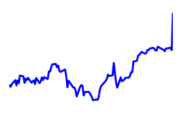
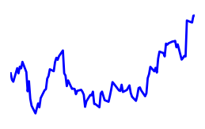

Финансовый монитор: IT АВТО
Список компаний:Список компаний учавствующие в финансовом мониторинге. ?
| Компания | Акция, min/max, $Стоимость акции на последнем закрытие.
Максимальное и минимальное значение стоиомсти за 5 дней. ? | Измение стоим.Изменение стоимости акции по сравнению с предыдущим закрытием. ? | Доход, Прибыль, млн.$Общий доход и чистая прибыль компании за последние 4 квартала. ? | Рентабельность, EPSРентабельность дохода=Чистая прибыль/Общий доход.
EPS - Какой доход принесла каждая акция. ? | Средняя рекомендацияСредняя рекомендация аналитиков относительно прогноза 1-5: 1-Покупать, 3- Держать(не покупать и не продавать), 5-Продавать. ? | ДивидендыДата последней выплаты дивидендов и сумма на акцию.
Если отсутствует - дивиденды не выплачиваются. ? | Последняя новостьПоследняя финансовая новость по указаной компании. ? | ДинамикаДинамика роста/падения акций за последнии 100 дней. ? |
|---|
| Facebook | 178.92
173.90
182.90 | -3.74 (-0.0209%) | 33,173.00 13,610.00 | 41.03
4.61 | Пр.покупать
1.67 | -
- | Facebook Inc. (FB) движется на спад объема на 02 ноября |  |
| Apple | 168.11
158.70
169.94 | +1.22 (+0.0073%) | 223,507.00 46,651.00 | 20.87
8.80 | Пр.покупать
1.76 | 0.63
2017-08-17 | Apple Inc. (AAPL) закрывается на 0,73% в день на 02 ноября |  |
| EPAM | 99.15
90.06
99.16 | +8.54 (+0.0861%) | 1,285.44 111.93 | 8.71
2.07 | Пр.покупать
1.75 | -
- | EPAM Systems Inc. (EPAM) выходит на новый 52-недельный максимум 02 ноября |  |
| Google | 1,025.58
1,007.50
1,048.39 | +0.08 (+0.0001%) | 104,596.00 21,015.00 | 20.09
29.35 | Пр.покупать
1.73 | -
- | Алфавит (GOOGL) Рейтинг «Купить», подтвержденный Citigroup Inc. |  |
Относительный рост акций, %%Относительный рост акций компаний. За 1 берем стомость акции 100 дней назад. ?
Рентабельность вложений в акцииСколько $$ заработал каждый вложенный $, учитывая рост акций и выплаты дивидендов ?

Выплаты дивидендов, $Временная шкала выплаты дивидендов на 1 акцию.
Если отсутствует - дивиденды не выплачиваются. ?
Рекомендации аналитиковРаспределение голосов ведущих аналитиков в вопросе "что делать сейчас с акциями" ?
Движение денежных средств за указанный период по видам деятельности: Основная, Инвестиционная, Финансовая и Разница статочная, млн.$Общая картина распоряжения денежными средствами.
Зеленый - приход денег, красный - уход.
Например: "красная" полоса в инвестиционной деятельности: компания инвестирует деньги куда-то, "зеленая" - в компанию инвестирует кто-то ?
Пики колебаний акций, %%Скачки роста акций. ?